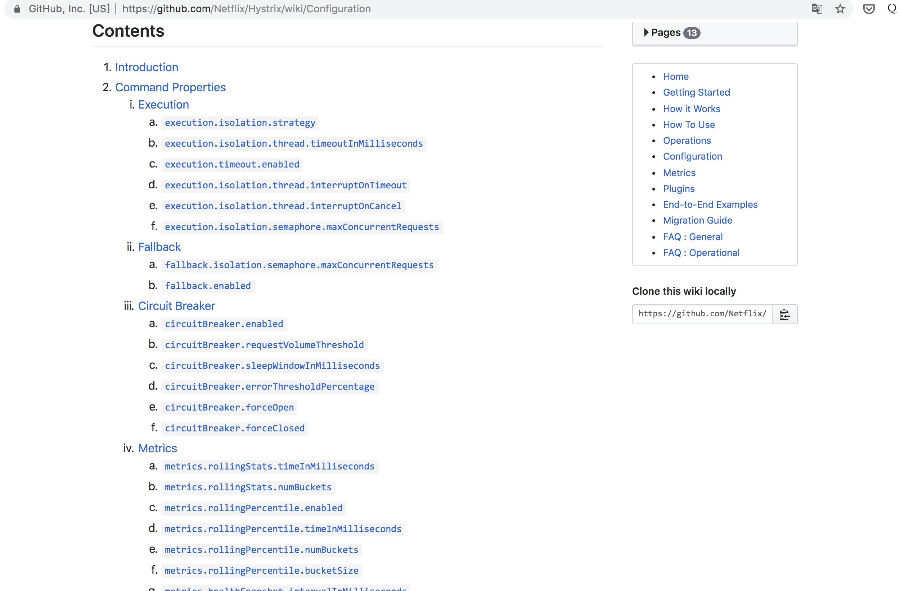
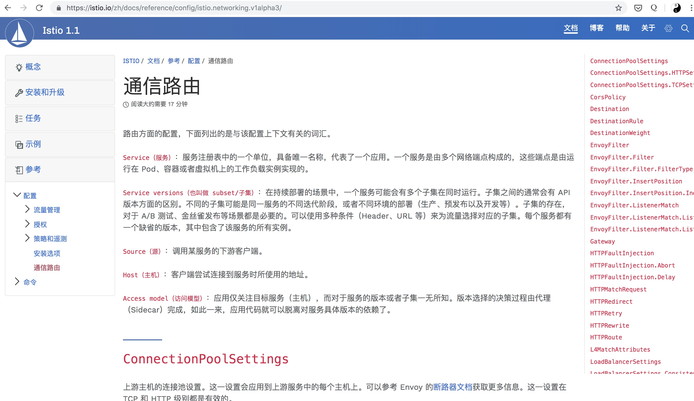
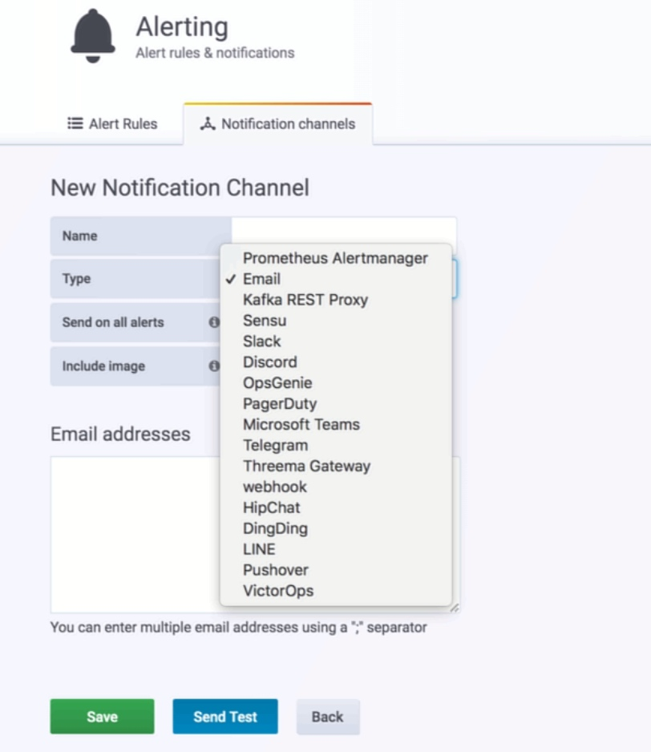

使用难度
hystrix
每个项目都需要引入hystrix包，或者在框架里引入，并且官方仅支持java
<!-- https://mvnrepository.com/artifact/com.netflix.hystrix/hystrix-core -->
<dependency>
<groupId>com.netflix.hystrix</groupId>
<artifactId>hystrix-core</artifactId>
<version>1.5.18</version>
</dependency>
编写可熔断调用
public class CommandHelloWorld extends HystrixCommand<String> {
private final String name;
public CommandHelloWorld(String name) {
super(HystrixCommandGroupKey.Factory.asKey("ExampleGroup"));
this.name = name;
}
@Override
protected String run() {
return "Hello " + name + "!";
}
@Override
protected String getFallback() {
return "Hello World";
}
}
destinationrule
apiVersion: networking.istio.io/v1alpha3
kind: DestinationRule
metadata:
name: httpbin
spec:
host: httpbin
trafficPolicy:
connectionPool:
tcp:
maxConnections: 1
http:
http1MaxPendingRequests: 1
maxRequestsPerConnection: 1
outlierDetection:
consecutiveErrors: 1
interval: 1s
baseEjectionTime: 3m
maxEjectionPercent: 100
无应用内代码，不需要了解特定语言相关知识，比如hystrix内部的线程池，信号量等。
配置能力
hystrix
hystrix官方提供大量配置项可供使用 Hystrix

istio
istio同样提供大量的指标可供配置 通信路由

hystrix和istio都提供大量的配置项进行自定义使用
业务侵入性
hystrix硬编码在业务代码里
destinationrule不在业务代码里
灵活性
destinationrule 随时可以添加和删除，无需改动代码，并且支持所有语言的应用
hystrix 硬编码，必须改动应用代码或者配置，仅限java使用，并且python, php等语言无官方支持
运维难度
hystrix需要改代码或者配置，虽然有apollo/nacos等统一的配置中心，但是还是需要了解hystrix的相关知识，并且可能需要重启应用等额外操作
destionationrule 运维只需了解istio相关知识即可
通过命令: kubectl apply -f 可以直接应用
通过命令: kubectl delete destinationrules.networking.istio.io 服务名 一键删除
维护成本
hystrix需要开发人员和运维人员同时参与维护
destinationrule只需要运维人员维护
熔断监控
hystrix
hystrix可以在java应用内硬编码报警脚本，比如: RegisterCommandExcutionHook.java
关键代码如下:
HystrixPlugins.getInstance().registerCommandExecutionHook(new HystrixCommandExecutionHook() {
@Override
public <T> void onFallbackStart(HystrixInvokable<T> commandInstance) {
HystrixCommand hystrixCommand = (HystrixCommand) commandInstance;
String commandKey = hystrixCommand.getCommandKey().toString();
log.error("Hystrix: {} 接口开始降级", commandKey);
super.onFallbackStart(commandInstance);
}
});
虽然在应用内可以使用代码采集足够的监控指标，但是硬编码，并且需要开发成本，并且日志和业务异常混杂在一起，不方便管理
istio
istio可以借助谷歌开源的prometheus进行监控，不需要应用内的开发，并且默认就支持钉钉等丰富的报警推送

不过hystrix和istio这两套环境可以同时存在